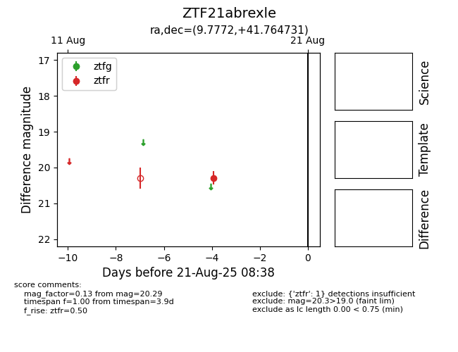

Target ZTF21abrexle at 2025-08-21 08:38, see:
FINK: fink-portal.org/ZTF21abrexle
Lasair: lasair-ztf.lsst.ac.uk/objects/ZTF21abrexle
ALeRCE: alerce.online/object/ZTF21abrexle
alt names
ZTF21abrexle (ztf,alerce)
coordinates:
equatorial (ra, dec) = (9.7772,+41.76473)
galactic (l, b) = (120.4689,-21.04805)
photometry
last ztfr=20.29
1 ztfr detections
